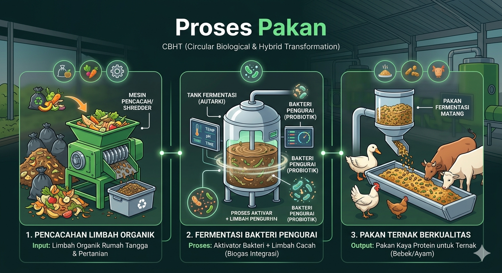
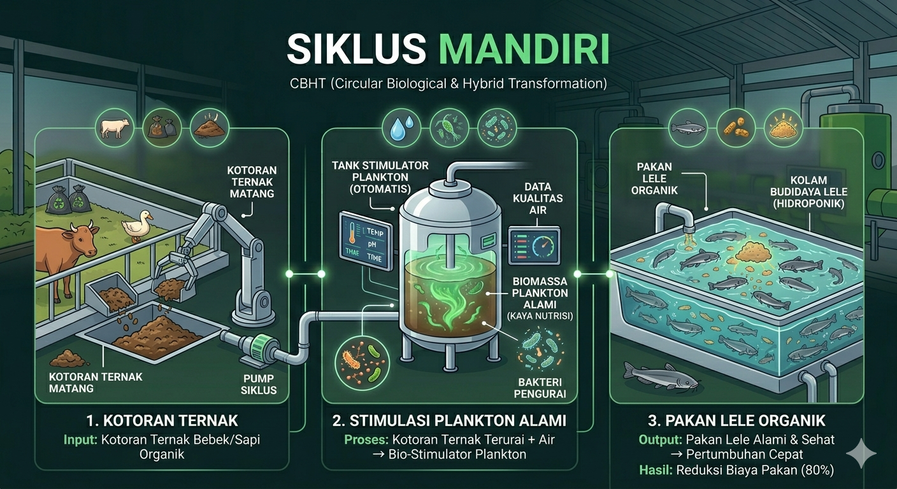
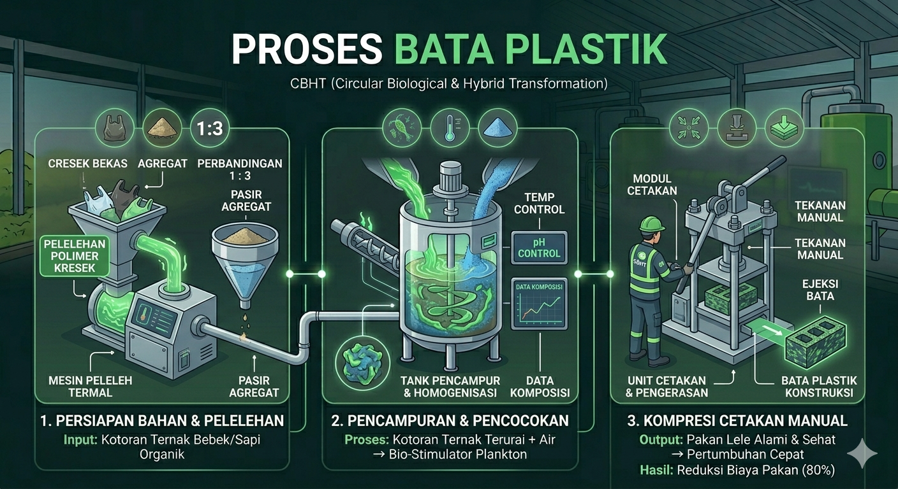
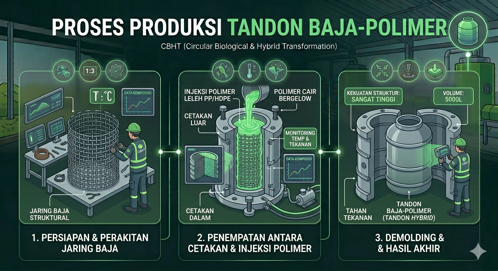
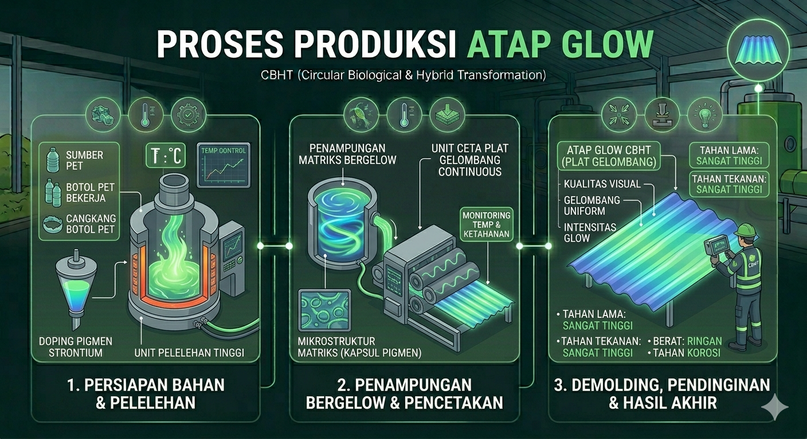

Circular Biological & Hybrid Transformation
Membangun Kedaulatan Desa Melalui Transformasi Limbah.
"Kami menjembatani ekosistem biologis dan rekayasa material untuk menciptakan masa depan tanpa sisa."
Strategic Roadmap
Filosofi Lembaga:
Sinergi proses Biological dan Hybrid Transformation.
Phase: Liquidity & Ecosystem
Optimalisasi pakan bebek, budidaya lele, dan manajemen aset anorganik.
Phase: Primary Plastic Engineering
Manufaktur bata plastik dengan energi mandiri biogas.
Phase: Hybrid Manufacturing
Produksi Tandon Air Baja-Polimer untuk irigasi mitra.
Phase: Future Material Innovation
Riset atap polimer transparan dan fotoluminesensi.
Panduan Teknis Produksi
LINI BIOLOGIS
1. Proses Pakan Organik
Pencacahan limbah organik → Fermentasi bakteri pengurai → Pakan ternak berkualitas tinggi.

2. Siklus Mandiri Ekosistem
Kotoran ternak → Stimulasi plankton alami → Pakan lele organik (Reduksi biaya pakan 80%).

LINI MANUFAKTUR
3. Rekayasa Bata Plastik
Pelelehan polimer kresek + Pasir agregat (Rasio 1:3) → Kompresi menggunakan cetakan manual.

4. Tandon Baja-Polimer Hybrid
Pemasangan struktur kawat baja di antara dua cetakan presisi → Injeksi polimer leleh PP/HDPE.

5. Inovasi Atap Fotoluminesensi
Future Innovation Program
Pelelehan botol PET bening + Pigmen Strontium → Pencetakan plat gelombang (Glow in the dark).

Output Ekosistem
Masa Depan Tanpa Sisa.
Sistem ini membuktikan bahwa limbah bukan akhir dari segalanya, melainkan awal dari kedaulatan pangan dan kemandirian material.
Kalkulator Iuran Investasi
Estimasi Iuran Per Orang
Rp 2.000.000
Total Modal: Rp 2.000.000